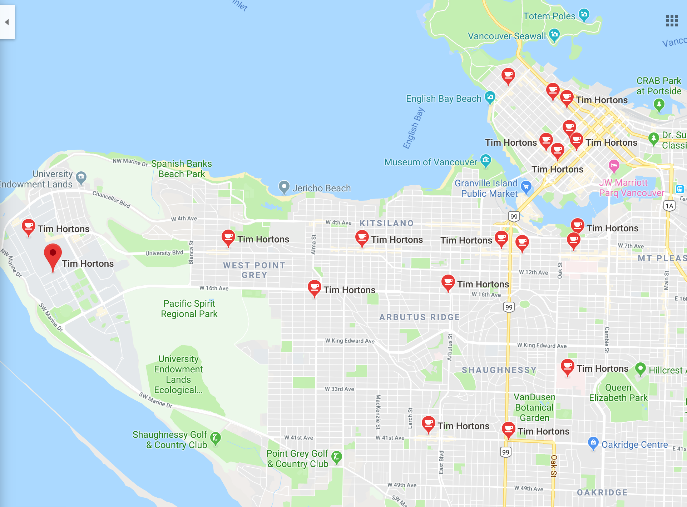
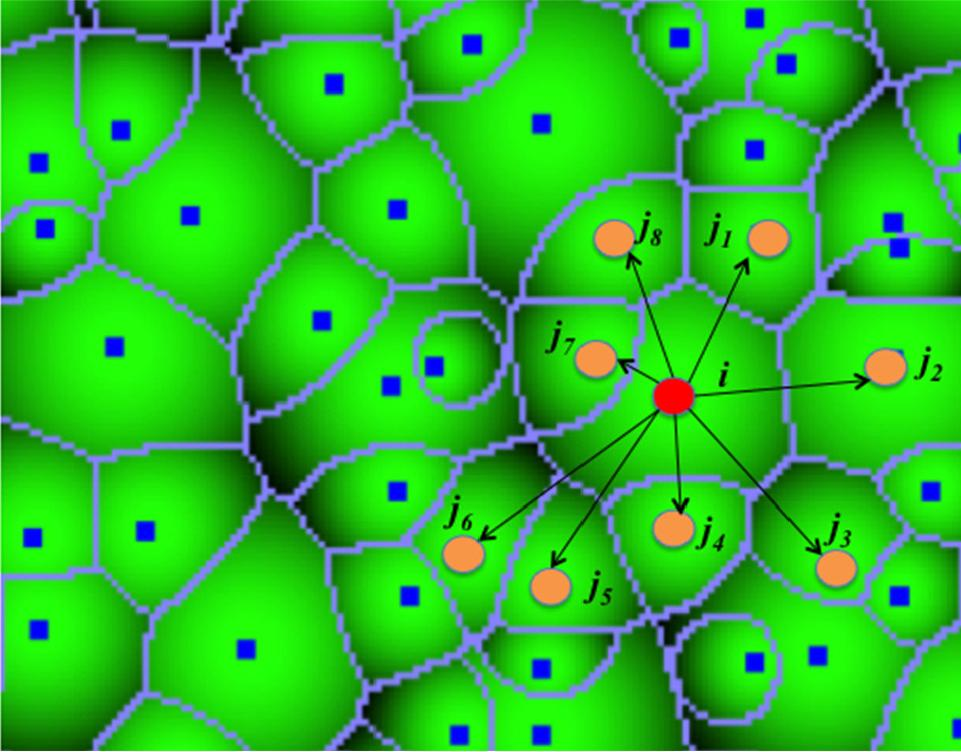
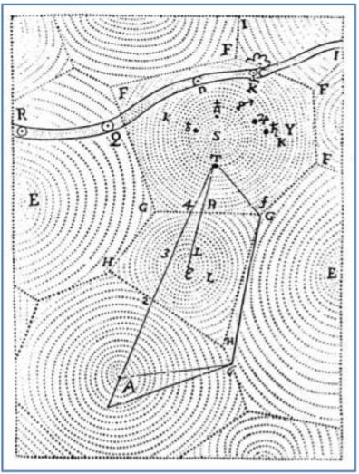
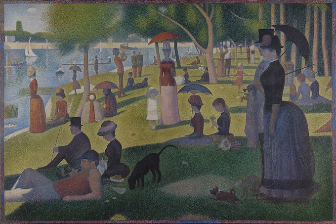
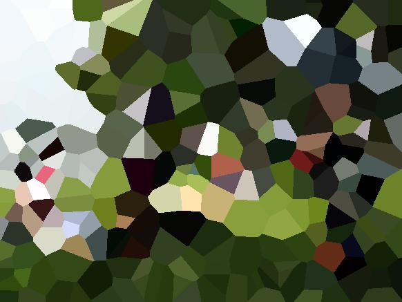
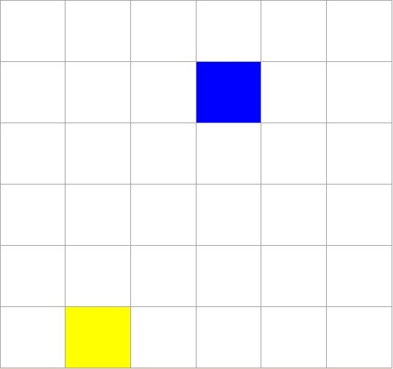
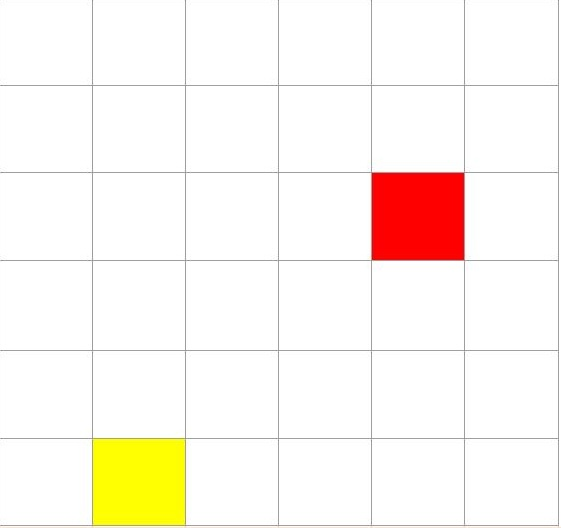

Programming, problem solving, and algorithms
CPSC 203, 2026 W1
October 20, 2026
Announcements
- Practice examlet 3 available.
- Book your slot for examlet 3.
- Lab 6 (stacks) and POTW 6 (summations and stacks) due Sunday.
- Project 1 due Monday, October 26 (next week).
Let’s Take Stock
What Have We Done?
- Measuring complexity / efficiency.
- Representing information with computer data.
- Lists: Mutation, aliasing and comprehensions.
- Dataclasses for compound data (and methods).
- Pandas and dataframes for tabular data.
- Dictionaries for key-value lookup.
- Sprinkled throughout: Various bits of Python syntax and idiom.
Where Are We Going?
- Stacks & queues: Data structures of interest for their efficiency.
- Application: Computing Voronoi diagrams.
- Graphs: Data structure of interest for representational power and (sometimes) efficiency.
- Applications: Markov chains for random processes, solving Sudoku, shortest path on maps.
- Fundamentally complex problems: Traveling Salesperson.
- More graphs: textual analysis, social networks, gerrymandering election boundaries.
- All with sprinkling of yet more bits of Python syntax and idiom.
Voronoi Diagrams
Voronoi diagrams
Given a (finite) set of “centres” \(c_{1}, c_{2}, \ldots, c_{k}\), a Voronoi region, \(R_{j}\) consists of the set of points nearer to centre \(c_{j}\), than to any other centre.
Together, the \(R_{j}\) regions compose the Voronoi diagram of a plane.

Applications
- Biology, Ecology, Forestry: Model and analyze plant competition.
- Zoology: Model and analyze the territories of animals.
- Robotics: Path planning in the presence of obstacles.
- Astronomy: Identify clusters of stars and clusters of galaxies.
- Cartography: Piece together satellite photographs into large “mosaic” maps.
- Geography: Analyzing patterns of urban settlements.
- Marketing: Model market of US metropolitan areas.
- Metallurgy: Modelling “grain growth” in metal films.

More Applications
- Physiology: Analysis of capillary distribution in cross-sections of muscle tissue to compute oxygen transport (“Capillary domains”).
- Meteorology: Estimate regional rainfall averages, given data at discrete rain gauges.
- Anthropology and Archeology: Identify regions under the influence of different neolithic clans, chiefdoms, ceremonial centers, or hill forts.
- Crystallography and Chemistry: Modelling alloy structures as sphere packings (“Domain of an atom”).
- Geology: Estimation of ore reserves in a deposit using info obtained from bore holes.

Motivational Aside: Pointillism

Un dimanche après-midi à l’Île de la Grande Jatte
Ferris Bueller’s Day Off: A Visit to the Art Institute of ChicagoAlgorithmic Art


- Select a subset of points from the original image.
- Use those points, with their colors, as centers in a new image of the same size.
- Build the Voronoi diagram in the new image, using the center colors from the original image.
Distance Between Pixels

Nearest Center

Design an Algorithm

Planning the Data:
What data structures do we need?
- Point:
- Color:
- Center:
- Centers:
- Image:
Planning the Algorithm:
How will data flow through our algorithm?
- Read input image.
- …
- Write output image.
Let’s Practice!
Open today’s activity. We’ll start with the loop-only version of the algorithm.
- Launch Class Activity: Voronoi Art in PrairieLearn.
- Open
voronoi_loop_nb.py.
Analysis
How much work is done?
- Read image:
- Choose centers:
- Build new image:
- Write out new image:
Size of the image: \(n\)
(\(n =\) width \(\times\) height)
Density of centers: \(d\)
Number of centers: \(dn\)